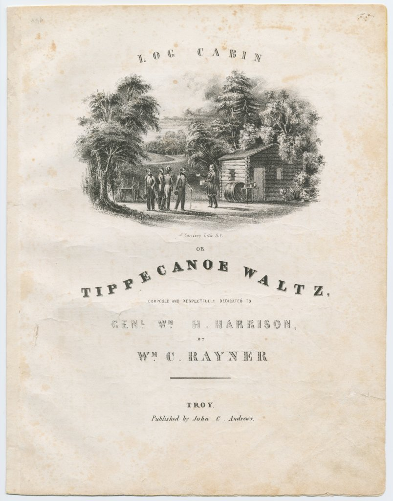

| Field | Detail |
| TOC Fit | Chapter 10 · Essay prompt 10.1 (How Democratic Was Jacksonian Democracy?) |
| Why Here | A commercial sheet-music cover sells a wealthy general as a frontier farmer, with a log cabin, cider barrel, and plow. Students can weigh how both parties now competed for mass audiences through popular culture and what image of “the people” the Whigs chose to project. |
| Treatment | Public-domain image; printed cover text transcribed from the image |
During the 1840 presidential campaign, music publishers rushed out marches, quicksteps, waltzes, and songs honoring William Henry Harrison, the Whig candidate. Many carried lithographed covers produced by Nathaniel Currier’s New York shop, which later became famous as Currier & Ives. The covers repeated the campaign’s symbols: the log cabin with its latch-string out, the barrel of hard cider, and scenes of Harrison as a farmer or as the victor of Tippecanoe. These images answered a Democratic gibe that Harrison would happily retire to a log cabin with hard cider. In fact Harrison was the son of a Virginia signer of the Declaration of Independence and lived on a large estate at North Bend, Ohio. Sheet music was sold for home performance on the parlor piano, so pieces like this carried the campaign into middle-class households, including to women who could not vote. Editorial note. This entry presents the cover of the sheet music from the Susan H. Douglas Political Americana Collection at Cornell University Library (three-page pamphlet; Conningham 3748). The catalog record identifies the composer as Wm. C. Rayner, the publisher as John C. Andrews of Troy, New York, the engraver and printer as Samuel Ackerman, and the cover lithographer as N. Currier. CAUTION: The cover is campaign imagery made to sell music and a candidate; its picture of Harrison’s life is political argument, not documentary record. Text transcribed for this reader from the repository image; illegible words are marked [illegible]. |
|
 |
|
UNIT 3 · AN EXPANDING NATION | HISTORY B17A | DANIEL GARZA, M.A.
|